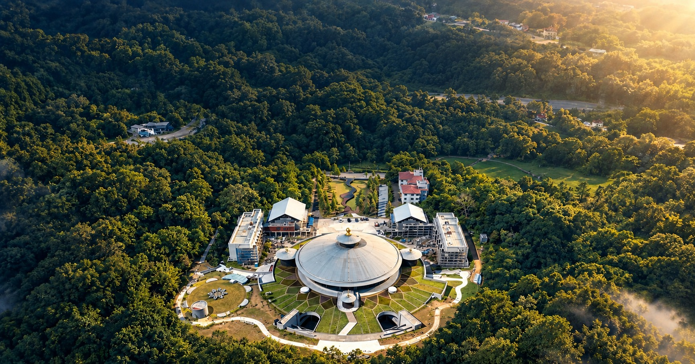

向下探索
01 / THE SPIRIT
老有所終，
壯有所用，
幼有所長。
壯有所用，
幼有所長。
一座承載願景的山
安東彌勒山宗教園區佔地約 22 公頃，以厚德大帝建設世界一貫村的願景為出發點。園區結合自然環境、建築與文化傳承，期盼成為十方善眾的心靈故鄉。
02 / EXPLORE THE JOURNEY
沿著動線，探索故事
先點一次「開始有聲導覽」，再一路往下滑。滑到哪個景點，就聆聽哪一站的故事。
語音導覽
往下滑到哪一站，就自動播放該站解說。
目前景點：迎啟橋
找不到符合條件的景點，請試試其他關鍵字。
※ 景點照片取自提供的導覽資料。景點照片依原始尺寸等比例顯示，圖片區貼合照片，不放大或裁切。部分圖片為簡報內既有影像；開放區域、實際展示與導覽動線以現場為準。
03 / THE JOURNEY THROUGH TIME
一段跨越歲月的建設歷程
從聖地的發心願景，走向建設、落成與文化傳承。重要里程碑依《導覽培訓手冊》整理。
1994金公祖師臨壇，慈示應速覓地擴建。
200712 月 6 日，聖地簽約。
200912 月 12 日，厚德紀念館落成。
202312 月 10 日，母殿落成啟用。
A VOICE OF COMPASSION
老前人尋聖地
跟隨老前人尋訪聖地的足跡，體會園區建設所承載的心愿。
AN ENDING, AND A BEGINNING
從一座山，看見一份愿
在每一次探索之間，感受自然、建築與人文交會的力量。
簡而不陋、樸而不俗、幽古寧靜而開闊。
每一個景點，都是一段值得細細聆聽的故事。